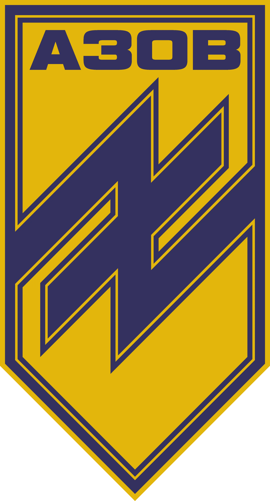

Звоник Дан
Спортсмен кіокушинкай карате.
Народився 1996 року м. Донецьк
У 2013 році став чемпіоном України з кіокушинкай карате.
Також посів перше місце на
Кубку світу з хонкіокушина Карате, i став чемпіоном кубка Європи
Бригада Національної гвардії України "Азов"
Спогад про героя
До спортивної зали Дан потрапив у три роки завдяки своєму батькові - Руслану. З самого початку війни, ще у 2014-му році, першим до лав полку "Азов" пішов тато Дана, а вже згодом долучився і сам Дан. Так вони і крокували по життю один біля одного.
Дан мав звання старшого солдата, служив у відділенні зв'язківців. Окрім спорту, Дан дуже сильно любив танцювати. Він був справедливим та веселим. Гумору не втрачав і в перші дні повномасштабного вторгнення, багато жартував та підтримував Родину.
Наша сім'я досі не вірить, що його нема.